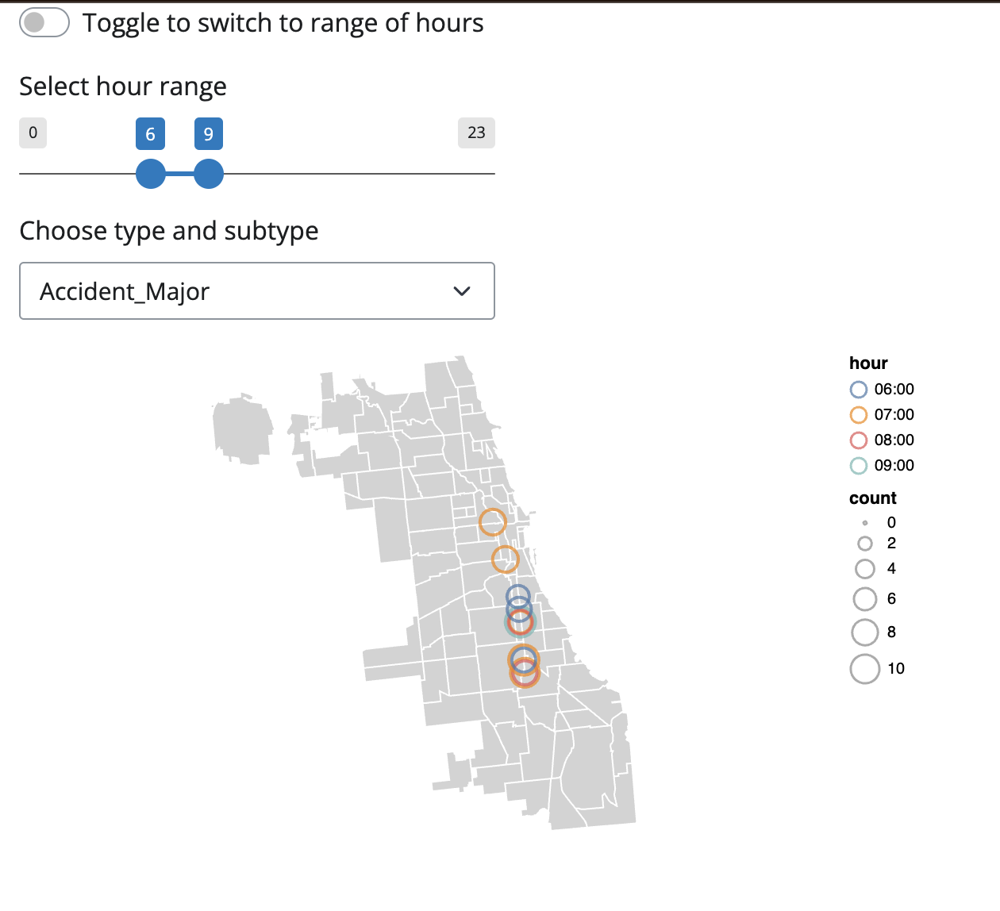
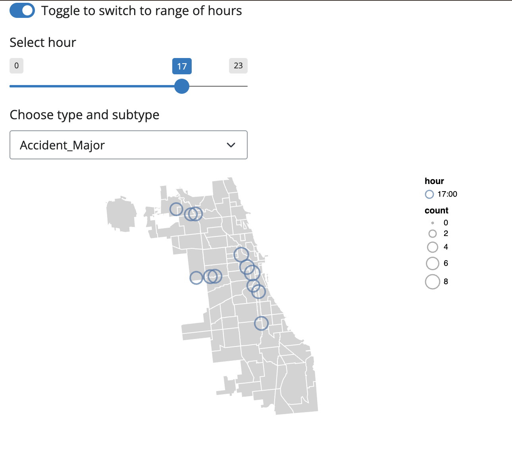

# required package
import pandas as pd
import altair as alt
from datetime import date
import numpy as np
import zipfile
alt.data_transformers.disable_max_rows()
import json
import requestsTop Location by Alert Type and Hour Dashboard
The data for this coding sample can be found here. The data dictionary for this dataset can be found here.
Data Download and Cleaning
Using the zipfile package, unzip the waze_data.zip file. Load the waze_data.csv file into a pandas DataFrame.
# $ cd your/working/direcory
# Extract zip
zip_path = 'waze_data.zip'
ext_path = 'waze_data'
with zipfile.ZipFile(zip_path, 'r') as zip_ref:
zip_ref.extractall(ext_path)
# load the waze_data.csv file into a dataframe waze
waze_path = "waze_data/waze_data.csv"
waze = pd.read_csv(waze_path)
print(waze.head(5)) city confidence nThumbsUp street \
0 Chicago, IL 0 NaN NaN
1 Chicago, IL 1 NaN NaN
2 Chicago, IL 0 NaN NaN
3 Chicago, IL 0 NaN Alley
4 Chicago, IL 0 NaN Alley
uuid country type subtype \
0 004025a4-5f14-4cb7-9da6-2615daafbf37 US JAM NaN
1 ad7761f8-d3cb-4623-951d-dafb419a3ec3 US ACCIDENT NaN
2 0e5f14ae-7251-46af-a7f1-53a5272cd37d US ROAD_CLOSED NaN
3 654870a4-a71a-450b-9f22-bc52ae4f69a5 US JAM NaN
4 926ff228-7db9-4e0d-b6cf-6739211ffc8b US JAM NaN
roadType reliability magvar reportRating ts \
0 20 5 139 3 2024-02-04 16:40:41 UTC
1 4 8 2 2 2024-02-04 20:01:27 UTC
2 1 5 344 2 2024-02-04 02:15:54 UTC
3 20 5 264 2 2024-02-04 00:30:54 UTC
4 20 5 359 0 2024-02-04 03:27:35 UTC
geo geoWKT
0 POINT(-87.676685 41.929692) Point(-87.676685 41.929692)
1 POINT(-87.624816 41.753358) Point(-87.624816 41.753358)
2 POINT(-87.614122 41.889821) Point(-87.614122 41.889821)
3 POINT(-87.680139 41.939093) Point(-87.680139 41.939093)
4 POINT(-87.735235 41.91658) Point(-87.735235 41.91658) print the unique values for the columns type and subtype.
# print the unique values
unique_types = waze['type'].unique()
unique_subtypes = waze['subtype'].unique()
print(f'The unique types:{unique_types}')
print(f'The unique subtypes:{unique_subtypes}')The unique types:['JAM' 'ACCIDENT' 'ROAD_CLOSED' 'HAZARD']
The unique subtypes:[nan 'ACCIDENT_MAJOR' 'ACCIDENT_MINOR' 'HAZARD_ON_ROAD'
'HAZARD_ON_ROAD_CAR_STOPPED' 'HAZARD_ON_ROAD_CONSTRUCTION'
'HAZARD_ON_ROAD_EMERGENCY_VEHICLE' 'HAZARD_ON_ROAD_ICE'
'HAZARD_ON_ROAD_OBJECT' 'HAZARD_ON_ROAD_POT_HOLE'
'HAZARD_ON_ROAD_TRAFFIC_LIGHT_FAULT' 'HAZARD_ON_SHOULDER'
'HAZARD_ON_SHOULDER_CAR_STOPPED' 'HAZARD_WEATHER' 'HAZARD_WEATHER_FLOOD'
'JAM_HEAVY_TRAFFIC' 'JAM_MODERATE_TRAFFIC' 'JAM_STAND_STILL_TRAFFIC'
'ROAD_CLOSED_EVENT' 'HAZARD_ON_ROAD_LANE_CLOSED' 'HAZARD_WEATHER_FOG'
'ROAD_CLOSED_CONSTRUCTION' 'HAZARD_ON_ROAD_ROAD_KILL'
'HAZARD_ON_SHOULDER_ANIMALS' 'HAZARD_ON_SHOULDER_MISSING_SIGN'
'JAM_LIGHT_TRAFFIC' 'HAZARD_WEATHER_HEAVY_SNOW' 'ROAD_CLOSED_HAZARD'
'HAZARD_WEATHER_HAIL']We discover that even though they are quite informative, some of them are not well structured, and some even have enough information to consider a sub-subtype. This is our motivation to clean this data.
First, we write out a bulleted listed with the values at each layer given this hiararchy idea.
- Accident
- Major
- Minor
- Hazard
- On Road
- Car Stopped
- Construction
- Emergency Vehicle
- Ice
- Object
- Pot Hole
- Traffic Light Fault
- Lane Closed
- Road Kill
- On Shoulder
- Car Stopped
- Animals
- Missing Sign
- Weather
- Flood
- Fog
- Heavy Snow
- Hail
- On Road
- Jam
- Heacy Traffic
- Moderate Traffic
- Stand Still Traffic
- Light Traffic
- Road Closed
- Event
- Construction
- Hazard
Then we do it in code:
### define a new df 'crosswalk'
crosswalk = pd.DataFrame(
columns=['type',
'subtype',
'updated_type',
'updated_subtype',
'updated_subsubtype'])
# first two columns from the original dataset
crosswalk[['type', 'subtype']] = waze[['type', 'subtype']]
### create a temporary cloumn 'combined_type'
crosswalk['subtype'] = crosswalk['subtype'].fillna('Unclassified')
crosswalk['combined_type'] = crosswalk["type"] + '_' + crosswalk['subtype']
crosswalk = crosswalk.drop_duplicates(subset=['combined_type']).reset_index(drop=True)
### deal with duplicated types in some rows
# some rows have duplicated type such as 'ACCIDENT_ACCIDENT'
# create a replacement dictionary
replacement_dict ={
'HAZARD_HAZARD' : 'HAZARD',
'JAM_JAM' : 'JAM',
'ROAD_CLOSED_ROAD_CLOSED' : 'ROAD_CLOSED',
'ACCIDENT_ACCIDENT' :'ACCIDENT'
}
# create a function to apply replacement
def adjustment_function(subtype, adjustment_dict):
for key, value in adjustment_dict.items():
if key in subtype:
subtype = subtype.replace(key, value)
return subtype
crosswalk['combined_type'] = crosswalk['combined_type'].apply(
lambda x: adjustment_function(x, replacement_dict)
)
### deal with type/subtype name with multiple words.
# create an adjustment dictionary
adjustment_dict = {
'ON_ROAD' : 'ON ROAD',
'ON_SHOULDER' : 'ON SHOULDER',
'CAR_STOPPED' : 'CAR STOPPED',
'EMERGENCY_VEHICLE' : 'EMERGENCY VEHICLE',
'POT_HOLE' : 'POT HOLE',
'TRAFFIC_LIGHT_FAULT' : 'TRAFFIC LIGHT FAULT',
'LANE_CLOSED' : 'LANE CLOSED',
'ROAD_KILL' : 'ROAD KILL',
'CAR_STOPPED' : 'CAR STOPPED',
'MISSING_SIGN' : 'MISSING SIGN',
'HEAVY_SNOW' : 'HEAVY SNOW',
'HEAVY_TRAFFIC' : 'HEAVY TRAFFIC',
'MODERATE_TRAFFIC' : 'MODERATE TRAFFIC',
'STAND_STILL_TRAFFIC' : 'STAND STILL TRAFFIC',
'LIGHT_TRAFFIC' : 'LIGHT TRAFFIC',
'ROAD_CLOSED' : 'ROAD CLOSED'
}
# use the above adjustment_function
crosswalk['combined_type'] = crosswalk['combined_type'].apply(
lambda x: adjustment_function(x, adjustment_dict)
)
### such that we can easily seperate type family by the underscore.
# define a function to fill in the three columns
def split_combined_type(combined_type):
parts = combined_type.split('_') # split based on the underscore
updated_type = parts[0]
updated_subtype = parts[1]
updated_subsubtype = parts[2] if len(parts) > 2 else 'Unclassified'
return updated_type, updated_subtype, updated_subsubtype
crosswalk[
['updated_type','updated_subtype','updated_subsubtype']
] = crosswalk['combined_type'].apply(
lambda x: pd.Series(split_combined_type(x))
)
# Drop the temporary column, "title" the content
crosswalk = crosswalk.drop(columns=['combined_type'])
crosswalk[
['updated_type', 'updated_subtype', 'updated_subsubtype']
] = crosswalk[
['updated_type', 'updated_subtype', 'updated_subsubtype']
].applymap(lambda x: x.title())
### merge the corsswalk df back to waze DataFrame
waze['subtype'] = waze['subtype'].fillna('Unclassified')
waze = waze.merge(crosswalk,
on = ['type','subtype'],
how = 'left'
)/var/folders/ql/ctwb9j8x6rb3l5jvsg9ht2l40000gn/T/ipykernel_40618/578899902.py:82: FutureWarning: DataFrame.applymap has been deprecated. Use DataFrame.map instead.
] = crosswalk[Data Visualization
Now that we have a cleaned DataFrame, we want to create a Shiny App to visualize the top 10 locations with the highest number of a certain alerts in a specific time or time period.
Download the geodata
Download the neighborhood boundaries as a GeoJSON from the Chicago Data Portal
file_path = "Boundaries - Neighborhoods.geojson"
with open(file_path) as f:
chicago_geojson = json.load(f)
geo_data = alt.Data(values=chicago_geojson["features"]) Prepare the DataFrame for the Shiny App
### use regex to capture longitude and latitude from column geo
waze[['longitude', 'latitude']] = waze['geo'].str.extract(
r'POINT\((-?\d+\.\d+)\s(-?\d+\.\d+)\)'
)
### round to two decimal places
waze['latitude_bin'] = waze['latitude'].astype(float).round(2)
waze['longitude_bin'] = waze['longitude'].astype(float).round(2)
### Extract hour data from the column ts
waze['ts'] = pd.to_datetime(waze['ts'])
waze['hour'] = waze['ts'].dt.strftime('%H:00')
### Select columns that will be used
top_alerts_map_byhour = waze[
['latitude_bin','longitude_bin','updated_type','updated_subtype','hour']
]
# aggregate to the level needed
top_alerts_map_byhour = top_alerts_map_byhour.groupby(
['latitude_bin', 'longitude_bin','updated_type','updated_subtype','hour']
).size().reset_index(name = 'count')
# save in the appointed folder
top_alerts_map_byhour.to_csv('top_alerts_map_byhour/top_alerts_map_byhour.csv',
index=False)Code for Shiny App
The code for the Shiny App is in /top_alerts_map_byhour/app.py
Here I use a function to print the code here for consistency.
def print_file_contents(file_path):
"""Print contents of a file."""
try:
with open(file_path, 'r') as f:
content = f.read()
print("```python")
print(content)
print("```")
except FileNotFoundError:
print("```python")
print(f"Error: File '{file_path}' not found")
print("```")
except Exception as e:
print("```python")
print(f"Error reading file: {e}")
print("```")
print_file_contents("top_alerts_map_byhour/app.py") ```python
from shiny import App, render, ui, reactive
from shinywidgets import render_altair, output_widget
import pandas as pd
import json
import altair as alt
# import top alerts data as df
df = pd.read_csv('top_alerts_map_byhour/top_alerts_map_byhour.csv')
df['type_subtype'] = df['updated_type'] + '_' + df['updated_subtype']
# import geodata
alt.data_transformers.disable_max_rows()
file_path = "Boundaries - Neighborhoods.geojson"
with open(file_path) as f:
chicago_geojson = json.load(f)
geo_data = alt.Data(values=chicago_geojson["features"])
# UI
app_ui = ui.page_fluid(
ui.input_switch(
"switch_button",
"Toggle to switch to range of hours",
value = False),
ui.panel_conditional(
"input.switch_button === false",
ui.input_slider('hour_range',
'Select hour range',
min=0,max=23,
value=(6,9),
step=1
)
),
ui.panel_conditional(
"input.switch_button === true",
ui.input_slider('hour',
'Select hour',
min=0,max=23,
value=12,
step=1
)
),
ui.input_select('type_subtype',
'Choose type and subtype',
choices=[]),
output_widget('top_alerts_byhour_plot')
)
# Server
def server(input, output, session):
# Update dropdown
@reactive.effect
def update_dropdown():
type_list = sorted(df['type_subtype'].unique())
ui.update_select('type_subtype', choices=type_list)
# Create Altair plot
@render_altair
def top_alerts_byhour_plot():
# conditional filter
selected_combination = input.type_subtype()
if input.switch_button():
selected_time = f"{input.hour():02d}:00"
filtered_data = df[
(df['type_subtype'] == selected_combination) &
(df['hour'] == selected_time)
]
else:
start_hour, end_hour = input.hour_range()
start_hour = f"{start_hour:02d}:00"
end_hour = f"{end_hour:02d}:00"
filtered_data = df[
(df['type_subtype'] == selected_combination) &
((df['hour'] >= start_hour) &
(df['hour'] <= end_hour))
]
# Background map
background = alt.Chart(geo_data).mark_geoshape(
fill='lightgray',
stroke='white'
).project('albersUsa').properties(width=500, height=300)
points = alt.Chart(filtered_data).mark_point().transform_window(
rank='rank(count)',
sort=[alt.SortField('count', order='descending')]
).transform_filter(
alt.datum.rank <= 10
).encode(
longitude='longitude_bin:Q',
latitude='latitude_bin:Q',
size='count:Q',
color=alt.Color('hour:N'),
tooltip=['longitude_bin', 'latitude_bin', 'count']
)
return background + points
# App
app = App(app_ui, server)
```Outcome screenshots
Below is an example of the Shiny outcome.
sample 1

sample 2
